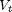

Dynamic Voltage Scaling Using Online Gradient Estimation
Contents
Overview
This model simulates an AT90S8535 microcontroller that uses a dynamic voltage scaling (DVS) feature to adjust the input voltage depending on the workload. By lowering the input voltage when the workload is low, the microcontroller reduces energy consumption while guaranteeing quality of service. The DVS controller is based on an online gradient estimation technique called infinitesimal perturbation analysis (IPA). In a single simulation of a parameterized system, not the large number of simulations required by a traditional finite-difference approach, IPA can provide sensitivity information that yields a first-order approximation of the system's performance metrics as a function of the parameters.
Applying IPA to the Controller
The performance metric to minimize is the average cost per job, given by
where
- is the average service time of a job, which is a function of the input voltage V. That is, finding the optimal value of also yields the optimal value of V.
- is a weighting constant.
- is the average energy consumption of a job in Joules.
- is the average system time for jobs, which measures quality of service. This model uses an M/M/1 queuing system, so a closed-form expression for provides a way to compare the IPA results in the simulation with theoretical results.
- and are device-dependent constants.
-  is the device's minimum input voltage.
To find a value of for which  is 0, this model uses a gradient method with constant step size . The th iteration of the optimization, which occurs upon the departure of the th job, uses the estimate to produce
is 0, this model uses a gradient method with constant step size . The th iteration of the optimization, which occurs upon the departure of the th job, uses the estimate to produce
To learn about the IPA estimation of , see the works listed in References.
Structure of the Model
The model includes these components:
- Job Arrivals section: source of jobs that form the workload
- FIFO Queue, Single Server, and other blocks in the blue section: queuing system for jobs
- DVS Optimizer subsystem: uses the queue length, value, service time for the latest job, and total number of jobs to compute and the corresponding updated input voltage
Results and Displays
The model includes these visual ways to understand its performance:
- A dynamic plot showing how the DVS controller varies the voltage during the simulation to reduce the average cost per job
- A Display block that shows the average service time for jobs
- A Display block that shows the corresponding input voltage
To experiment, try changing the value of the Avg Interarrival Time block before running the simulation.
References
[1] Cassandras, C. G., and S. Lafortune. Introduction to Discrete Event Systems. Boston, MA: Kluwer Academic Publishers, 1999.
[2] Li, W., C. G. Cassandras, and M. I. Clune. "Model-Based Design of a Dynamic Voltage Scaling Controller Based on Online Gradient Estimation Using SimEvents." Proceedings of 45th IEEE Conference on Decision and Control. 2006, pp. 6088-6092.
[3] Weiser, M., B. Welch, A. Demers, and S. Shenker. "Scheduling for Reduced CPU Energy." Proceedings of the 1st Symposium on Operating Systems Design and Implementation. 1994, pp. 13-23.